Lecture 6
Complex Analysis I
2025-08-22
The primary tools we will develop in this course are the Laplace and Z-transform. Because the inverse of these transforms is an integral in the complex plane, it is helpful to have a basic understanding of complex analysis. Over the next three lectures we will introduce the concepts and methods of complex analysis. Today we will review complex numbers and complex functions \(f: \mathbb{C} \rightarrow \mathbb{C}\).
Complex Numbers
Recall the basics of complex numbers
\(j\) is the imaginary unit, the solution to \(s^2 + 1 = 0\), \(j = \sqrt{-1}\).
a complex number is the combination of two real numbers \(x,y\) with the imaginary unit using addition and multiplication \(s = x + j\, y\)
we write \(s\in\mathbb{C}\)
\(x = \text{Re}(s)\) is the real part of \(s\)
\(y = \text{Im}(s)\) is the imaginary part of \(s\)
if \(x=0\) \(s\) is purely imaginary, if \(x=0\) \(s\) is purely real, note \(s = 0+j0 = 0\) is the only complex number that is both
given two complex numbers \(s_1 = x_1 + jy_1\) and \(s_2 = x_2 + jy_2\)
they are equal if and only if \(x_1 = x_2\) and \(y_1 = y_2\)
\(s_1 + s_2 = (x_1 + x_2) + j(y_1 + y_2)\)
\(s_, s_2 = (x_1 + jy_1)(x_2 + jy_2) = (x_1x_2 - y_1y_2) + j(x_1y_2 + x_2y_1)\)
\(\frac{s_1}{s_2}\), \(s_2 \neq 0\) can be expressed as \[\begin{aligned} \frac{s_1}{s_2} &= \frac{x_1 + jy_1}{x_2 + jy_2}\\ &= \frac{x_1 + jy_1}{x_2 + jy_2}\cdot \frac{x_2 - jy_2}{x_2 - jy_2}\\ &= \frac{(x_1x_2 + y_1y_2) + j(x_2y_1 - x_1y_2)}{x_2^2 + y_2^2} \end{aligned}\]
\(s^* = x - jy\) is the conjugate of \(s = x+jy\)
\(|s| \geq 0\) is the absolute value or modulus \[|s| = |a +jy| = \sqrt{x^2 + y^2} = \sqrt{s\, s^*}\]
Some properties of complex numbers that are often useful:
\(| s_1 \cdot s_2 \cdots s_n| = | s_1| \cdot |s_2| \cdots |s_n|\)
\(\left| \frac{s_1}{s_2} \right| = \frac{|s_1|}{|s_2|}\)
note that \(|s_1 + s_2| \neq |s_1| + |s_2|\), a common mistake
the real and imaginary part of a complex number \(s\) can be expressed as \[\begin{aligned} \text{Re}(s) = \frac{s+s^*}{2}\\ \text{Im}(s) = \frac{s-s^*}{2j} \end{aligned}\]
the conjugate of the sum/product/ratio is the sum/product/ratio of the conjugates \[\begin{aligned} (s_1 + s_2)^* &= s_1^* + s_2^*\\ (s_1 \cdot s_2)^* &= s_1^* \cdot s_2^*\\ \left(\frac{s_1}{s_2}\right)^*, \, s_2 \neq 0 &= \frac{s_1^*}{s_2^*} \end{aligned}\]
inequalities
\[\begin{aligned} -|s| \leq \text{Re}(s) \leq |s|\\ -|s| \leq \text{Im}(s) \leq |s|\\ |s_1 + s_2| \leq |s_1| + |s_2|\\ |s_1 + s_2 + \cdots s_n| \leq |s_1| + |s_2| + \cdots |s_n|\\ \end{aligned}\]
Geometric Representation of the Complex Plane
A complex number is a two-dimensional vector in the complex plane
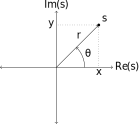
where
\(r = |s|\) is variously the norm, length, modulus, magnitude
\(\theta = \tan^{-1}\left(\frac{y}{x}\right)\) is variously the angle, argument, or phase
\(x = r\cos(\theta)\) is the real part
\(y = r\sin(\theta)\) is the imaginary part
In cartesian form \[\begin{aligned} s &= x + jy\\ &= r\cos(\theta) + jrsin(\theta)\\ &= r\left[ \cos(\theta) + j\sin(\theta)\right] \end{aligned}\]
In polar form
\[s = r e^{j\theta}\]
Equating the two forms we can see Euler’s identity \[s = r e^{j\theta} = r\left[ \underbrace{\cos(\theta) + j\sin(\theta)}_{\text{Euler's identity}}\right]\]
and some commonly used manipulations:
\(s_1 \cdot s_2 = r_1 e^{j\theta_1} \cdot r_2 e^{j\theta_2} = r_1 \cdot r_2 e^{j(\theta_1 + \theta_2)} = r_1 r_2\left[\cos(\theta_1 + \theta_2) + j\sin(\theta_1 + \theta_2)\right]\)
\(|s| = |r e^{j\theta}| = |r||e^{j\theta}| = r\)
\(\cos(\theta) = \frac{1}{2}e^{j\theta} + \frac{1}{2}e^{-j\theta}\)
\(\sin(\theta) = \frac{1}{2j}e^{j\theta} \frac{1}{2j}e^{-j\theta}\)
Note that the complex plane is a vector space spanned by the real and imaginary part. Any vector in the space rotated by \(2\pi\) is indistinguishable from any other, i.e. \(r e^{j\theta} = re^{j(\theta + 2\pi n)}\) for any \(n\in\mathbb{Z}\). When \(n = 0\) \(\theta = \theta_p\) is called the principle argument.
Complex Valued Functions
You should be already very familiar with complex valued functions from ECE 2714, as they are used extensively: \(f: \mathbb{R} \rightarrow \mathbb{C}\). Some properties
\[\begin{aligned} f(t) &= x(t) + jy(t)\\ \frac{df}{dt} &= \frac{dx}{dt} + j\frac{dy}{dt}\\ \int f(t)\; dt &= \int x(t)\; dt + j\int y(t)\; dt + C \end{aligned}\]
Examples are time domain functions, e.g.
\[e^{j\omega t} = cos(\omega t) + j\sin(\omega t)\]
and frequency domain functions, e.g.
\[H(\omega) = \frac{1}{1+j\omega}\]
Complex Functions
We now focus on the functions we will be studying for much of the semester, complex functions or complex-valued functions onf a complex argument \(f: \mathbb{C} \rightarrow \mathbb{C}\). Following our notation above where \(s = x + jy\), we write
\[f(s) = \underbrace{u(x,y)}_{\text{Re}(s)} + j \underbrace{v(x,y)}_{\text{Im}(s)}\] where the real and imaginary parts of \(f(s)\) are functions \(u,v\) from \(\mathbb{R}^2\) onto \(\mathbb{R}\). In other words, the real part of \(f(s)\) is a function of the real and imaginary parts of \(s\), and the imaginary part of \(f(s)\) is also a function of the real and imaginary parts of \(s\).
Some examples. Note in some cases the cartesian form is preferred while in others the polar form is clearer.
\(f(s) = s = \text{Re}(s) + j\text{Im}(s)\)
\(f(s) = s^* = \text{Re}(s) - j\text{Im}(s)\)
\(f(s) = s^2 = \left(re^{j\theta}\right)^2 = r^2 e^{j2\theta}\)
\(f(s) = s^n\) for \(n\in\mathbb{Z}\)
polynomials: \(f(s) = \sum\limits_{k = 0}^N a_ks^k\)
power series expansion about \(s_0\): \(f(s) = \sum\limits_{k = 0}^N (s-s_0)^k\)
rational functions \[f(s) = \frac{\sum\limits_{k = 0}^M a_ks^k}{\sum\limits_{k = 0}^N a_ks^k}\]
The last example will be particularly important as the system function for LTI systems is a rational function in most cases.
The previous examples were all single-valued functions. Lets look at two interesting multi-valued functions.
You know that for \(x\in\mathbb{R}\) the solution to \(x^2 = y\) is \(\pm \sqrt{y}\), the function is mult-valued. Similarly for complex numbers (derivation omitted)
\[\sqrt{s} = \sqrt{x + jy} = \pm \left[\sqrt{\frac{x + \sqrt{x^2 + y^2}}{2}} + j\frac{y}{|y|} \sqrt{\frac{-x + \sqrt{x^2 + y^2}}{2}}\right]\] if \(y \neq 0\). If \(y = 0\) then \[\sqrt{s} = \sqrt{x} = \pm \sqrt{|x|}\]
Another example is the inverse of \(e^s\), \(\ln(s)\) \[\ln(s) = \ln(|s|) + j(\theta_p + 2\pi n)\] where \(n\in\mathbb{Z}\) and \(\theta_p\) is the principle argument.
Visualizing Complex Functions
Since the argument to a complex function is a pair of real numbers and the resulting value is also a pair, we have to use surface or contour plots to visualize complex functions.
Using surface plots we need two, for the real part and imaginary part of the function value or for the magnitude and phase of the function value. For example consider the complex function
\[f(s) = f(x + jy) = x^2\cdot y + jx\cdot y\]
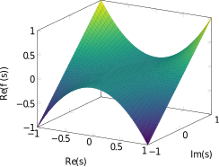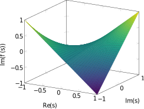
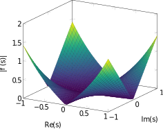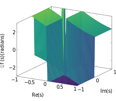
For contour plots we again need two plots, either for the real part and imaginary part or for the magnitude and phase. However theses plots consist of a set of curves each defining an iso-contour, all the points whose function value takes on a constant. These are essential topographical maps.
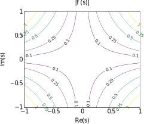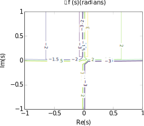
Limits of Complex Functions
Recall from your first calculus course the definition of a limit for functions \(f:\mathbb{R}\rightarrow\mathbb{R}\). The limit of a function at a domain value \(x_0\in\mathbb{R}\), written as
\[\lim_{x \rightarrow x_0} f(x) = y_0\] exists if for some \(\epsilon > 0\), there exists a \(\delta > 0\) such that \(0 < |x-x_0| < delta\) implies \(|f(x) - y_0| < \epsilon\).
Similarly for complex functions \(g:\mathbb{C}\rightarrow\mathbb{C}\), the limit of a function at a complex value in the domain \(s_0\in\mathbb{C}\), written as
\[\lim_{s \rightarrow s_0} f(s) = w\] exists if for some \(\epsilon > 0\), there exists a \(\delta > 0\) such that \(0 < |s-s_0| < \delta\) implies \(|f(s) - w| < \epsilon\). However we can approach \(s_0\) from any direction.
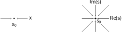
We will use the concept of a limit to define the derivative of a complex function at our next meeting.
Point at Infinity
In calculus it is often useful to extend the real line to include \(\pm\infty\), often denoted \(\mathbb{R}^* = \mathbb{R} \cup \{-\infty, \infty\}\). However because the complex plane \(\mathbb{C}\) has no ordering (it is a 2D vector space) there is only one point at infinity and \(\mathbb{C}^* = \mathbb{C} \cup \{\infty\}\), where for \(s\in\mathbb{C}\)
\(s + \infty = \infty\)
\(s \cdot \infty = \infty\)
\(\infty + \infty = \infty\)
\(\infty \cdot \infty = \infty\)
\(\frac{s}{\infty} = 0\)
and \(\frac{\infty}{\infty}, 0\cdot\infty, \infty-\infty\) are undefined.
To visualize the extended complex plane, \(\mathbb{C}^*\), we can use the Riemann sphere.
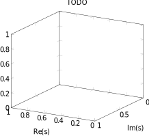
In the above figure the line from a pont \(s\) to \((0,0,1)\) intersects the sphere at some point \((x_0,y_0,z_0)\) where \(s = \frac{x_0 + jy_0}{1-z_0}\) (stereographic projection). In this view the point \(s = \infty\) corresponds to the point \((0,0,1)\).
Curves in the Complex Plane
Another concept that we will use extensively is that of curves in the complex plane. Let \(p\) be a parameterization of a curve in \(\mathbb{C}\). A curve is defined as \(C = s(p) = x(p) _ jy(p)\) for \(a \leq p \leq b\). The point \(s_0 = s(a) = x(a) + jy(a)\) is the initial point. The point \(s_1 = s(b) = x(b) + jy(b)\) is the terminal or final point.
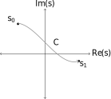
If \(s_0 = s_1\), then the curve is closed.
The curve is smooth if \[\frac{ds}{dp} = \frac{dx}{dp} + j \frac{dy}{dp}\] is continuous and never zero for \(a \leq p \leq b\) (the curve must change in some direction).
The curve is piece-wise smooth if it is smooth except at a finite number of points which join.
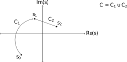
The curve is simple if \(s(p_1) \neq s(p_2)\) for \(p_1 \neq p_2\) except possibly \(p_1=a\), \(p_2 = b\) and the curve is closed. This means that there are no sef-intersections.
We will use curves to define contour integration of complex functions in future meetings.